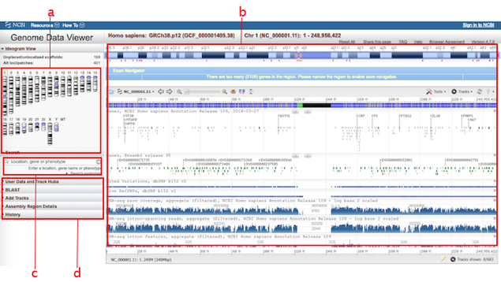

Navegador Genómico
Problema:Visualizar y explorar elementos cromosómicos en su contexto genómico.

- Vista general. - Contiene controles capaces de navegar por el genoma completo y el patrón Cargar Datos para seleccionar los datos a ser visualizados; el patrón Idiograma puede incluirse para facilitar la orientación a lo largo de la secuencia genética. Si se incluye, el patrón Idiograma facilita tanto la visualización y navegación por los cromosomas de la especie como la navegación por la secuencia de un cromosoma específico.
- Vista detallada. – Debe incluir el patrón Pista Comparativa configurado horizontalmente y ocupando en gran medida el espacio de la interfaz de usuario. Permitir al usuario configurar el contenido de cada pista. Una pista debe ser dedicada a los datos genómicos que se quiere explorar. Otras pistas pueden configurarse con anotaciones provenientes de diferentes fuentes (p. ej., Gene, 1000G, dbSNP, OMIM, ClinVar), que agregan información de contexto como información de genes, población, enfermedad, estadísticas que facilitan la interpretación y exploración de la primera pista. El patrón Pista Comparativa incorpora controles de desplazamiento, alejamiento y acercamiento para explorar y visualizar las pistas a más bajo detalle.
- Asociación (relacionado a)
- Agregación (tiene un)
- Especialización (es un)
El patrón se crea instanciando la clase “GenomicBrowser”. La instancia del patrón inicializa sus componentes, es decir, los patrones: Idiograma (clase “Idiogram”), Buscar (clase “Search”), Pista Comparativa (clase “ComparativeTracks”), Selector de Regiones (clase “RegionSelector”). Las interacciones que ofrece el patrón Navegador Genómico están dadas por las interacciones de cada uno de sus componentes.
En este esquema, las clases correspondientes a los patrones que componen el navegador genómico son representaciones generalizadas de cada uno de los patrones. La estructura detallada de cada uno de ellos puede ser consultada en la documentación de cada patrón.
En la interfaz de usuario de Genome Data Viewer mostrada en la portada (Imagen 6.38) se puede apreciar algunas de los patrones que conforman el patrón Navegador Genómico: a) Idiograma b) Pista Comparativa c) Selector de Regiones y Buscar y d) acceso al patrón Cargar Datos como parte del patrón Pista Comparativa. Otras implementaciones de este patrón son Navegadores Genéticos y Visores genéticos implementados en plataforma web y escritorio.
Basados en web: Vega, Sequence Viewer, GBrowse, G-compass, JBrowse, LookSeq, UTGB, Ensembl Gente Browser, UCSC Xena, IGV. Basados en escritorio: Integrative Genomics Viewer, SnapGene Viewer